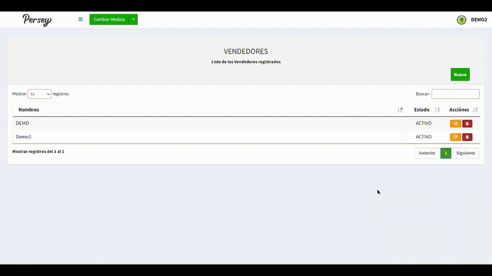
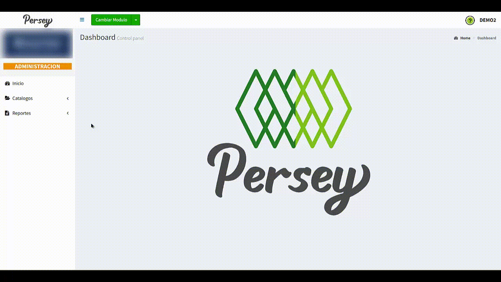
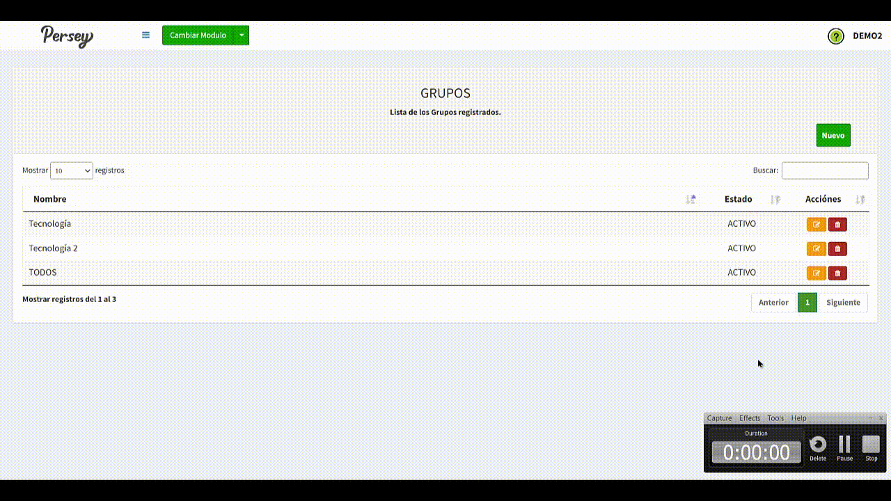
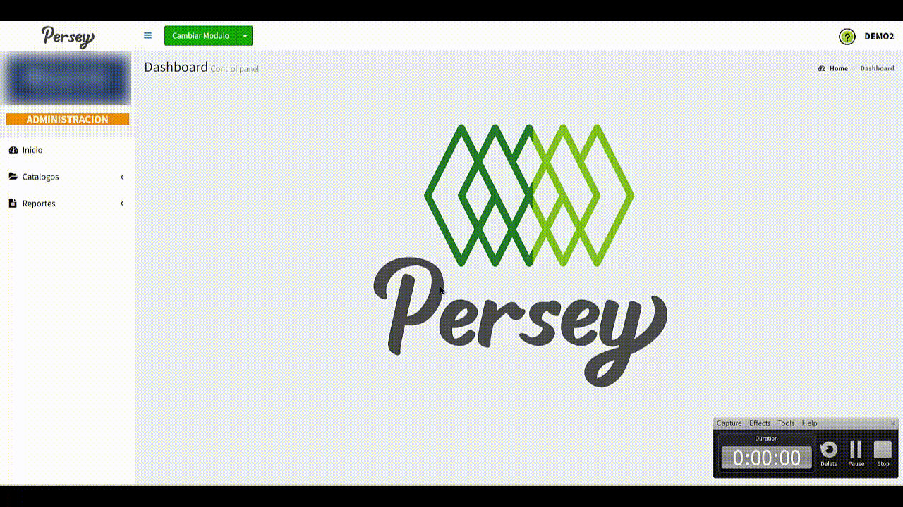
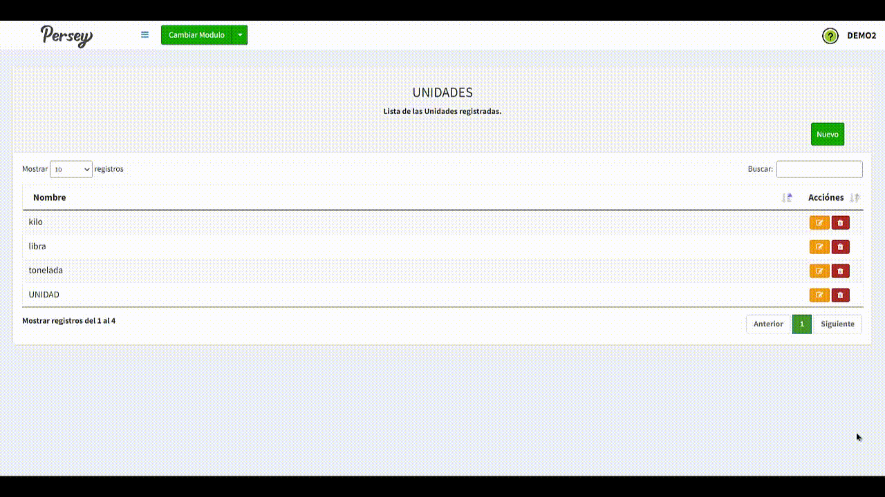
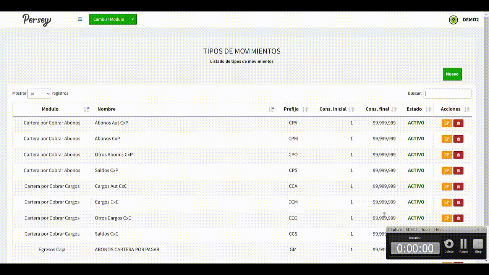
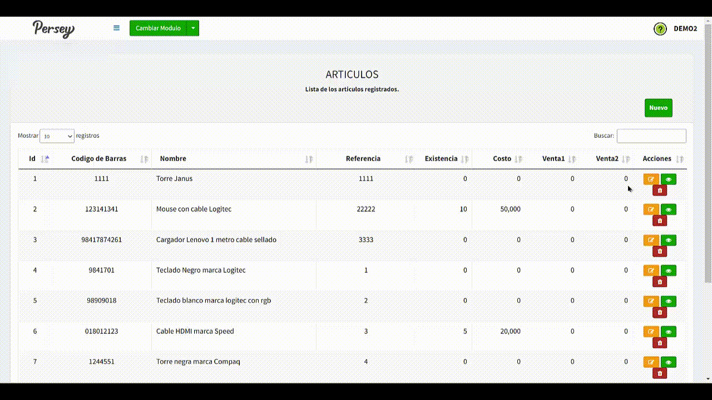
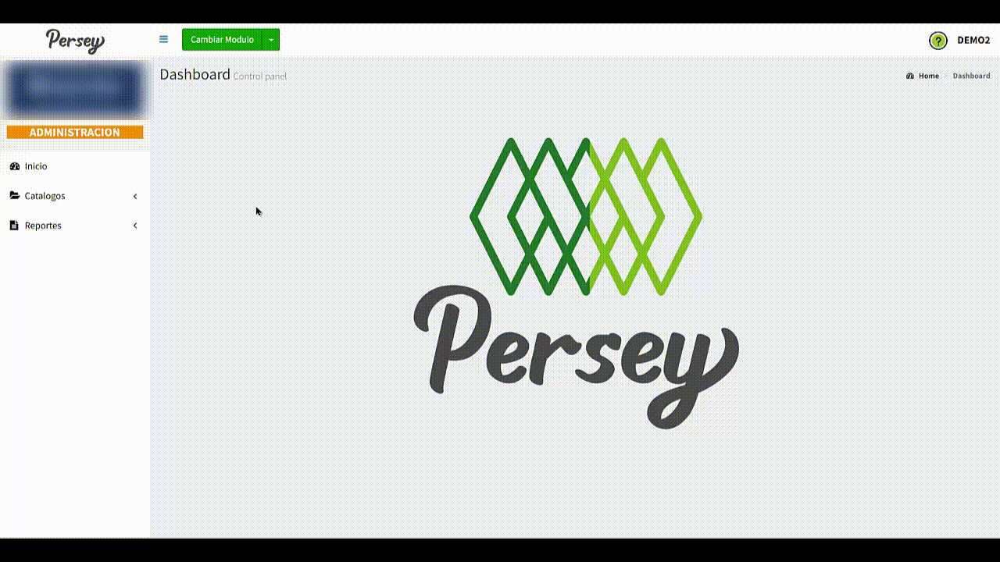
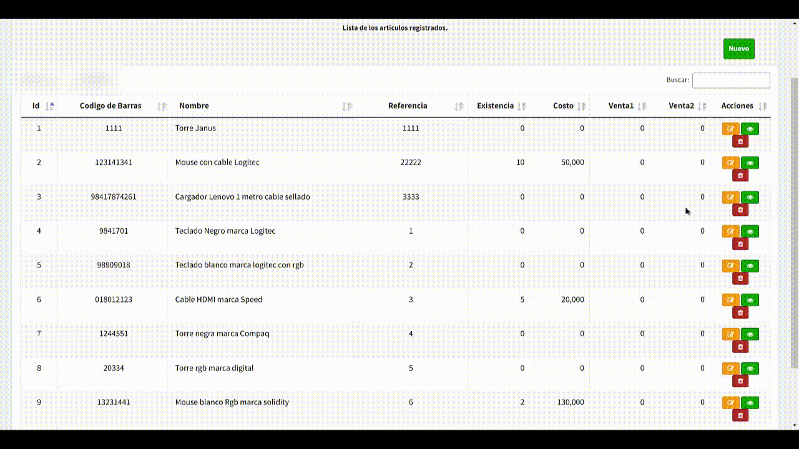

Primeros pasos#
En el menú lateral izquierdo va a encontrar todas las opciones que usted va a poder realizar en el aplicativo de Persey.
Guia visual :


En el menú lateral izquierdo va a encontrar todas las opciones que usted va a poder realizar en el aplicativo de Persey.
Aquí podras guiarte paso a paso para hacer administración de todas las secciones
Para agregar un tercero a su empresa debe darle en el boton que dice "NUEVO". Debe diligenciar el formulario con los campos correspondientes de izquierda a derecha, los campos que tienen un asterisco rojo son obligatorios. Cuando complete el formualario debe darle click en el boton que dice "GUARDAR"

Es de bien saber, que usted tambien tendrá la posibilidad de editar o eliminar un tercero como se observa en el video

Para agregar un vendedor a su empresa debe darle en el boton que dice "NUEVO". Debe diligenciar el formulario con los campos correspondientes de izquierda a derecha, los campos que tienen un asterisco rojo son obligatorios. Cuando complete el formualario debe darle click en el boton que dice "GUARDAR"
Es de bien saber, que usted tambien tendrá la posibilidad de editar o eliminar un vendedor como se observa en el video
Para agregar una bodega a su empresa debe darle en el boton que dice "NUEVO". Debe diligenciar el formulario con los campos correspondientes de izquierda a derecha, los campos que tienen un asterisco rojo son obligatorios. Cuando complete el formualario debe darle click en el boton que dice "GUARDAR". Tambien debe tener en cuenta la configuración del estado

Es de bien saber, que las bodegas son indispensables para el funcionamiento de los "Traslados"
Para agregar un grupo a su empresa debe darle en el boton que dice "NUEVO" en la sección de catalogos. Debe diligenciar el formulario con los campos correspondientes de izquierda a derecha, los campos que tienen un asterisco rojo son obligatorios. Cuando complete el formualario debe darle click en el boton que dice "GUARDAR". Tambien debe tener en cuenta la configuración del estado
Es de bien saber, que usted tambien tendrá la posibilidad de editar o eliminar grupos como se observa en el video
Para agregar una unidad en especifico a su empresa debe darle en el boton que dice "NUEVO" en la sección de catalogos. Debe diligenciar el formulario con los campos correspondientes de izquierda a derecha, los campos que tienen un asterisco rojo son obligatorios. Cuando complete el formualario debe darle click en el boton que dice "GUARDAR".
Es de bien saber, que usted tambien tendrá la posibilidad de editar o eliminar una unidad como se observa en el video
En esta sección usted te ndrá la posibilidad de ajustar los parametros generales y especificos de cada uno de los modulos del sistema, a continuación, encontrará a detalle como manipular las configuraciones
Otro aspecto importante, es que usted tendrá la posibilidad de editar la tira de cierre de Caja. Por ejemplo: tiene usted la posibilidad de editar los datos que quiere que se muestren en la sección de "Encabezado", "Información de Cierre", "Rango de Facturas", "Ventas por Grupos", "Formas de Pago" entre otros, para mas ilustración vease el siguiente video:
NOTA: Luego de realizar ajustes, NO olvide darle en el boton de "Guardar"Para agregar un movimiento a su empresa debe darle en el boton que dice "NUEVO" en la sección de catalogos. Debe diligenciar el formulario con los campos correspondientes de izquierda a derecha, los campos que tienen un asterisco rojo son obligatorios. Cuando complete el formualario debe darle click en el boton que dice "GUARDAR".
Es de bien saber, que usted tambien tendrá la posibilidad de editar o eliminar un tipo de movimiento como se observa en el video
Para agregar un servicio a su empresa debe darle en el boton que dice "NUEVO" en la sección de catalogos. Debe diligenciar el formulario con los campos correspondientes de izquierda a derecha, los campos que tienen un asterisco rojo son obligatorios. Cuando complete el formualario debe darle click en el boton que dice "GUARDAR".

Es de bien saber, que usted tambien tendrá la posibilidad de editar o eliminar un servicio como se observa en el video
Para agregar un articulo a su empresa debe darle en el boton que dice "NUEVO" en la sección de catalogos. Debe diligenciar el formulario con los campos correspondientes de izquierda a derecha, los campos que tienen un asterisco rojo son obligatorios. Cuando complete el formualario debe darle click en el boton que dice "GUARDAR".
Es de bien saber, que usted tambien tendrá la posibilidad de editar o eliminar un articulo como se observa en el video
Aquí podras guiarte paso a paso como generar reportes para el posterior análisis
Dirijase hacia la sección de "Reportes" y elija la opción de "Compras por Periodo". elija las fechas sobre las cuales quiere usted ver el reporte y posterior a ello oprima en "Ver"